Síndrome de Pequenez
Este não é um artigo de opinião nem o pretende ser. Não tenciono divagar sobre o sentimento de inferioridade português, no que respeita ao seu tamanho e população, ou teorizar sobre as possíveis raízes do problema. O objectivo deste artigo é provar através de factos concretos e números irrefutáveis que este sentimento não tem razão de existir.
Quem nasceu no território português já se deparou por certo com a ideia generalizada de que Portugal é um pais pequeno. Empregue em situações várias para justificar a nossa frágil economia ou tímida prestação noutros domínios, esta é uma ideia que está inexoravelmente ligada ao nosso sentimento de inferioridade, falta de nacionalismo e consequente propensão para o estrangeirismo. Contudo, esta noção não poderia estar mais errada. Deixemos que os números falem por si.
Área Total
Portugal é realmente um país pequeno se o compararmos a gigantes territoriais como a Rússia, o Canadá ou a China. Contudo no contexto mundial o mais correcto seria dizer que Portugal é um pais médio. Senão vejamos:
Se considerarmos os actuais 196 países que formam o mapa geopolítico do mundo actual (192 Estados-membros das Nações Unidas e outros 4 apenas reconhecidos internacionalmente como Estados independentes), Portugal ocupa o número 108 em área total. Ora se dividirmos o número total em três grupos, respectivamente, países grandes, médios e pequenos, rapidamente nos apercebemos que Portugal se situa no grupo dos médios.
Área Total: Portugal entre os 196 países do mundo.No entanto, existe alguma polémica na definição do número total de países, sendo que a Wikipédia, na versão inglesa, mantém duas listas independentes, uma de países soberanos (com 196 entidades) e outra simplesmente intitulada de lista de países – que abrange 245 entidades, incluindo Estados independentes (reconhecidos internacionalmente ou não-reconhecidos), territórios dependentes inabitados, e áreas de especial soberania. Naturalmente, este panorama favorece a colocação de Portugal, visto que ocupando a posição 110 entre 245, Portugal aproxima-se do grupo dos médio-grandes.
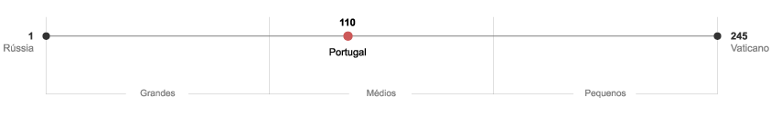
Área Total: Portugal entre 245 Estados independentes e áreas de especial soberania.Independentemente de o número total de países se situar nos 196 ou 245, Portugal consta sempre na linha meridional como um país de dimensão média, nunca como um país pequeno. Aliás este facto torna-se ainda mais evidente quando se compara a área total dos actuais 27 países da União Europeia, em que Portugal ocupa a 13ª posição. Como dado curioso, é interessante notar que Portugal tem mais do dobro do tamanho da Estónia, da Dinamarca e da Holanda, e sensivelmente o triplo da área total da Bélgica.
| 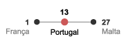 | 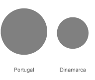 | 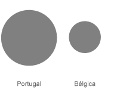 | ||
| Portugal, um país de dimensão média na União Europeia. |
Portugal tem mais do dobro do tamanho da Dinamarca, Holanda e Estónia. | Portugal tem o triplo da área total da Bélgica. |
População
Se em área total Portugal é um país médio, em população, Portugal é decididamente um país médio-grande. Quer tomemos como amostra os 196 ou os 245 países do mundo, Portugal encontra-se na confortável 75ª posição em número total de habitantes. Na Europa, esta dimensão torna-se ainda mais evidente, sendo que entre os 47 países que compõem esta região, Portugal ocupa a 13ª posição. E uma vez mais, o mesmo acontece no seio da União Europeia, em que Portugal é o décimo país com maior população, ficando à frente da Bélgica, República Checa, Hungria, Suécia, Áustria, Bulgária, Eslováquia, Dinamarca, Finlândia, Irlanda, Lituânia, Estónia, Eslovénia, Estónia, Chipre, Luxemburgo e Malta. Resta perguntar, Portugal é pequeno em quê?
População: Portugal entre os 196 países do mundo.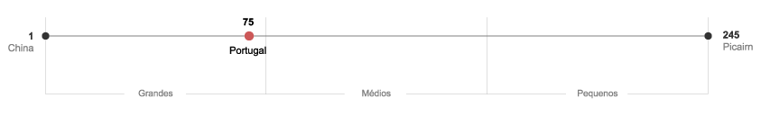
População: Portugal entre 245 Estados independentes e áreas de especial soberania.
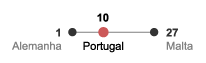
População: Portugal na décima posição entre os 27 países da UE.Portugal: Uma rica dimensão
Um outro mito que é importante destruir é de que um país para ser rico tem de ser grande em área ou população. A maioria dos economistas e analistas de sistemas reconhecem o cariz leviano e implausível deste mito, quando está provado que um sistema de pequena dimensão é notavelmente mais fácil de gerir e controlar. No entanto, persiste em alguns factores da sociedade portuguesa uma ideia que alia facilmente fraco desenvolvimento a um país pequeno.
Uma frase recorrente é que “Portugal é um país pequeno na cauda da Europa”. Sendo que a cauda não se refere apenas à localização geográfica do país mas ao fundo das tabelas estatísticas de desenvolvimento económico, esta última associação é um erro que é importante esclarecer.
Com vista a clarificar esta percepção errónea fez-se um pequeno estudo em que se comparou Portugal e os restantes países do mundo, segundo 3 importantes variáveis: Área Total, População e PIB per capita. As primeiras duas foram escolhidas por serem os principais factores que distinguem usualmente um país grande de um país pequeno. A última variável foi seleccionada por ser um dos indícios fundamentais da riqueza de um país.
A principal conclusão a que se chegou é de que entre os 36 países do mundo com um PIB per capita superior a Portugal, 16 são mais pequenos em área e população. Entre estes 16 países, é de notar que a Áustria, Bélgica e Suíça ficam inclusive à frente de Portugal em PIB total. A figura seguinte ilustra bem esta divergência. Note-se como todos os países listados na coluna central, com um PIB per capita superior a Portugal, situam-se atrás deste nas colunas laterais, relativas à população e área total. Alguns padrões interessantes emergem nesta representação.
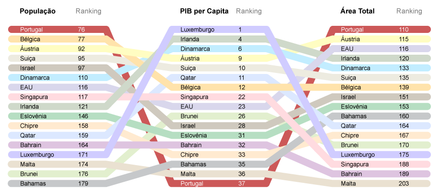
PIB per capita (2006) derivado da Paridade do Poder de Compra - calculada pelo Fundo Monetário Internacional.
Os próximos gráficos ajudam a compreender melhor o rácio entre PIB per capita, área e população, entre alguns dos países que embora mais pequenos que Portugal, apresentam um PIB per capita superior. Note-se o caso da Irlanda e da Dinamarca por exemplo, que embora mais pequenos e com sensivelmente metade da população, apresentam quase o dobro do PIB per capita de Portugal. Aqui novamente, os dados falam por si.
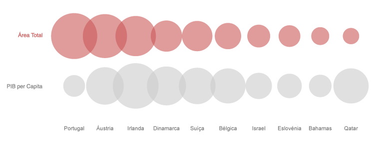
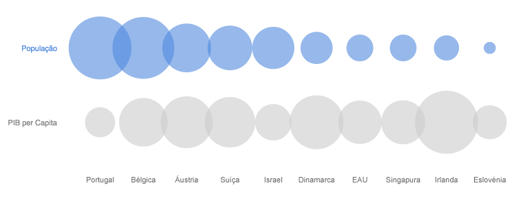
A cauda geográfica
Voltando novamente à afirmação de que Portugal é um país pequeno na cauda da Europa. Penso já ser suficientemente claro que a primeira parte é falsa, visto que Portugal não pode ser considerado um país de pequena dimensão, muito menos no seio da Europa. Contudo a cauda geográfica é um facto indiscutível e indissociável do nosso sentimento de afastamento da Europa central. A próxima figura ilustra bem esta distância, com as 27 capitais da UE representadas de acordo com a sua localização geográfica.
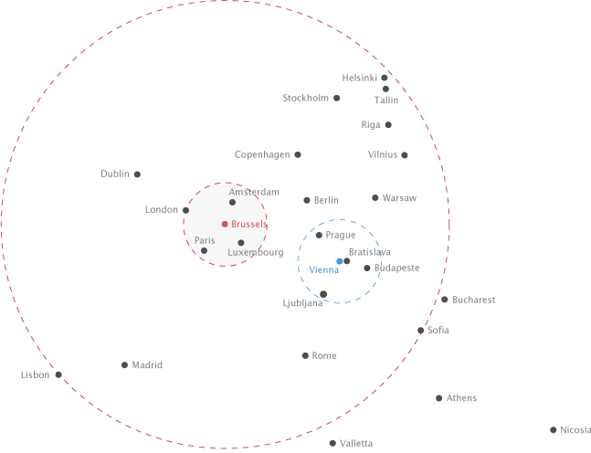
Distribuição geográfica das 27 capitais da União Europeia.Imediatamente nos apercebemos do isolamento de Lisboa e Madrid e da separação dos nossos parceiros mediterrâneos. A dita cauda existe, sendo que em relação a Lisboa, apenas 4 capitais estão mais afastadas do centro de decisão europeu. Lisboa está a 1713 km de Bruxelas, enquanto Bucareste (Roménia) está a 1782 km, Valetta (Malta) a 1852 km, Atenas (Grécia) a 2089 km e por último, a mais longínqua capital europeia, Nicósia (Chipre) a 2903 km.
Helsínquia (Finlândia) está 54 km mais perto de Bruxelas que Lisboa, assim como Sófia (Bulgária), que por uma margem mínima de 12 km, está igualmente mais próxima da capital da União Europeia. É interessante notar dois pólos de concentração importantes na Europa central. O mais poderoso de todos contém 5 capitais europeias num curto raio de 320 km (menos da distância entre Lisboa e Madrid). Este círculo central inclui Bruxelas (Bélgica), Amesterdão (Holanda), Luxemburgo (Luxemburgo), Paris (França) e Londres (Reino Unido). Apenas outro círculo, com raio de 320 km, consegue englobar 5 outras capitais da UE. Com centro em Viena (Áustria), esta área engloba Bratislava (Eslováquia), Budapeste (Hungria), Praga (República Checa) e Liubliana (Eslovênia).
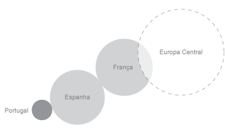
O afastamento, referido anteriormente, entre Lisboa e Bruxelas, acentua-se quando entre as duas capitais assentam lado a lado os dois maiores países da União Europeia, respectivamente França e Espanha. De modo a clarificar qualquer dúvida, convém esclarecer que a França é o maior país da UE e o terceiro maior da Europa, atrás da Rússia e da Ucrânia.
Conclusão
Pondo de lado a distância geográfica que tende a ter cada vez menos peso com o avanço das novas tecnologias de informação e facilidade de comunicação, tentou provar-se com este artigo que Portugal é um país de dimensão média e que a riqueza de um país não depende do seu tamanho. Podemos arranjar todas as desculpas e mais alguma para justificar as fragilidades do desenvolvimento económico de Portugal, mas que se acabe de uma vez por todas com a desculpa absurda e claramente injustificada de que somos um país pequeno.
Sources
- Fundo Monetário Internacional
http://www.imf.org/
- CIA - The World Factbook
https://www.cia.gov/library/publications/the-world-factbook/index.html
- Wikipedia
http://www.wikipedia.org/